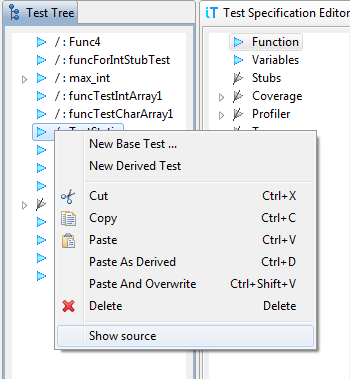

Editing
With testIDEA we can set or change all parts of test
specifications, as described in the The
Test Specification page. However, sometimes we also want to
arrange the order of test specifications, move them between
instances of testIDEA or between testIDEA and text
editor. These operations are described on this page.
Selecting test specifications
If we want to perform the same operation on multiple test
specifications, we have to select more of them. This can be done
in one of the following ways:
-
Hold down the
Ctrl key and click test
specifications in the Test Tree with mouse.
-
Hold down the
Ctrl key and move selection with
cursor keys. Press space to add test
specification to the selection.
-
Hold down the
Shift key and move selection with
cursor keys. With each move one test specification is added
to the selection.
Cut/Copy/Paste
Operations from the title move test specification to/from
operating system's clipboard. They are stored there as plain text
in YAML format. Therefore we can copy test specification
from testIDEA to text editor or the other way around.
Paste As Derived
As the name tells, this command pastes test specification from the
clipboard as derived test specification of the currently
selected test specification.
Paste And Overwrite
This command pastes test specification so that all sections, which
are defined in the test specification on the clipboard, overwrite
the same sections of the selected test specification. For example,
if test specification on the clipboard has defined
sections Coverage and Options, these two
sections will replace the same sections of the selected test
specification, regardless if they are defined in the
selected test specification or not.
Copying individual sections
Suppose we have section Variables, which we would
like to apply also to few other test specifications. This can be
achieved with the following steps:
-
right click the section
Variables in
the Test Specification Editor, and select
the Copy command from the context menu.
-
select a test specification in the
Test tree view and
select the Paste And Overwrite command.
The section is applied to the selected test specification.
View test specification source
The context menu of test specifications in test tree contains
option Show source.

If we select it, winIDEA opens
the source files (either iyaml or C/C++ source) and
positions the cursor to the selected test specification.
Note: When we move test specifications around in the test tree,
source code location may no longer match the one in source
file. If we save the file, locations are refreshed.